Oscar Pratola
Oscar PratolaMaterials Science & Additive Manufacturing
Course projects on topology optimization, additive manufacturing process design, and structural/fatigue analysis, completed during the M.Sc. in Aeronautical Engineering.
Topology Optimization of a Vega Payload Adapter Bracket
Download report (PDF)An ECSS-compliant structural redesign of a support bracket for the Vega launcher's payload adapter, targeting a lightweight, additively manufacturable component while meeting stiffness, frequency, and safety-factor requirements under a 15 g static launch load and cross-axis vibration environment. The starting point was the original bracket, which interfaces with the electrical connector and the ACU support points on the upper stage adapter shown below.
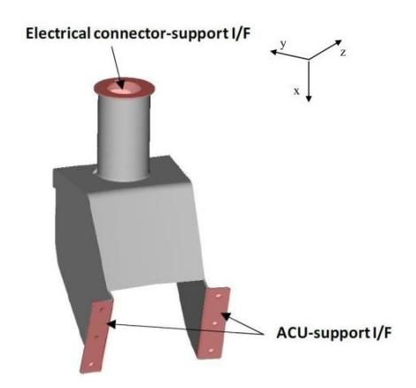
The optimization process moved through several iterations of mass and stiffness maximization, followed by a design-for-additive-manufacturing phase evaluating support structures (h-cell, rod, and tree configurations) and print orientation. The rod-support configuration was selected for its lower mass and better deformation performance. A compensated geometry approach was then used to counteract print-induced springback: the part is deliberately printed in a bent shape so that, once the supports are removed, the elastic recovery brings it back to the intended final geometry.
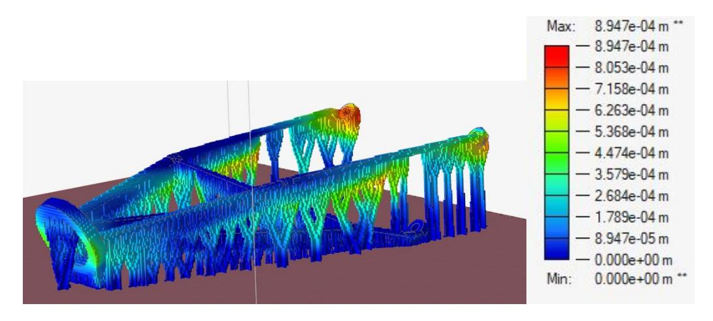
After support removal, the compensated geometry fully eliminates residual deformation while keeping peak stresses below the AlSi10Mg yield threshold, with the highest residual stresses concentrated at the connector, the region of the geometry that must not deform.
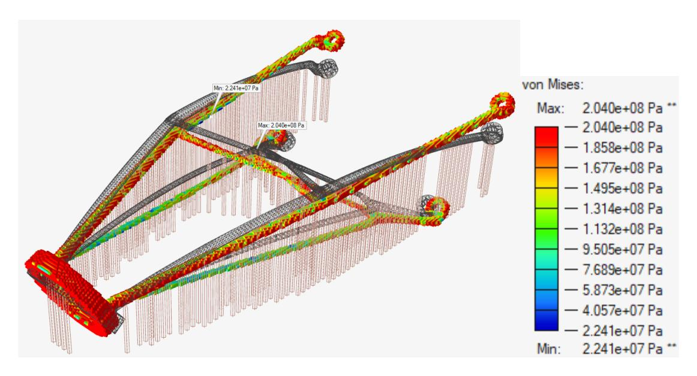
| Metric | Original | Optimized |
|---|---|---|
| Mass | 453 g | 73.6 g (−83.6%) |
| Qualification Safety Factor | — | 1.25 |
| Support configuration | — | Rod supports, horizontal orientation |
Topology Optimization of an Aerospace Bracket in PEKK Antero 800NA
Download report (PDF)Applying Design for Additive Manufacturing (DfAM) principles, this project minimized structural deformation of a lightweight bracket under a 150 N distributed load, 3D printed in PEKK Antero 800NA via FDM, and validated the simulation against physical correlation testing. Topology optimization was chosen over shape optimization as the more effective method for this component.
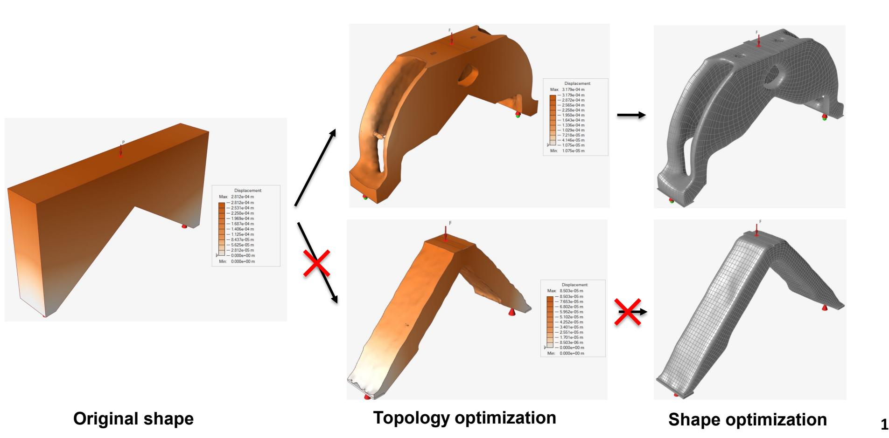
An Ω-shaped geometry, printed horizontally to align fibers with the applied load and reduce support material, was selected over a V-shaped alternative that proved prone to excessive bending. The chosen design keeps a minimum factor of safety of 1.4 across the part.
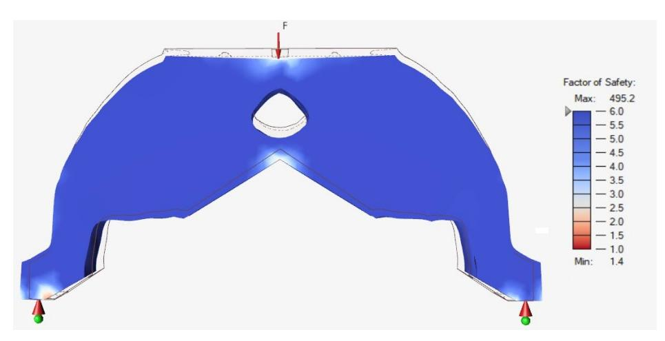
Supports were removed post-print using a 22 g/L NaOH solution, progressing each printed part from its as-printed state to a finished, support-free component.
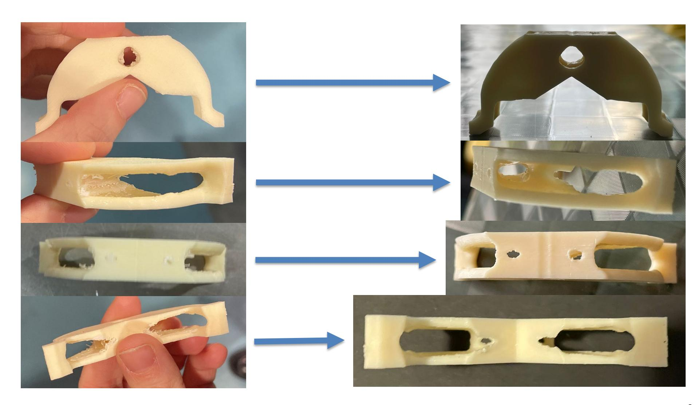
Simulation results were then validated against physical testing, using hydraulic wedge grips to apply a controlled axial load to the printed part.
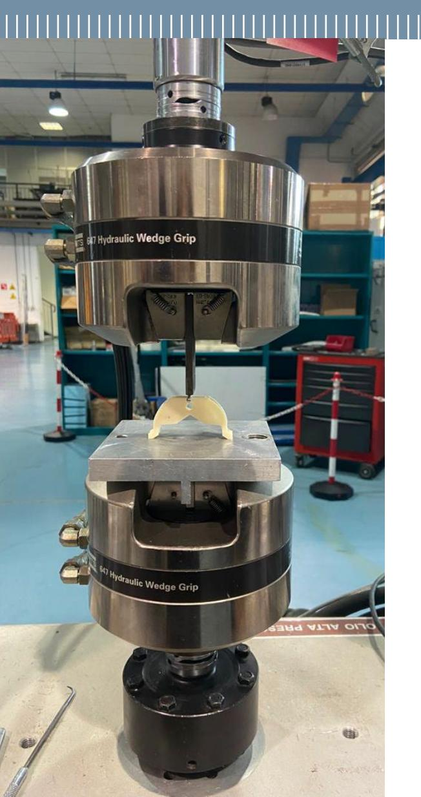
The physical test confirmed the simulation: yielding was observed at approximately 150 N and 0.56 mm of vertical displacement, closely matching the predicted behavior.
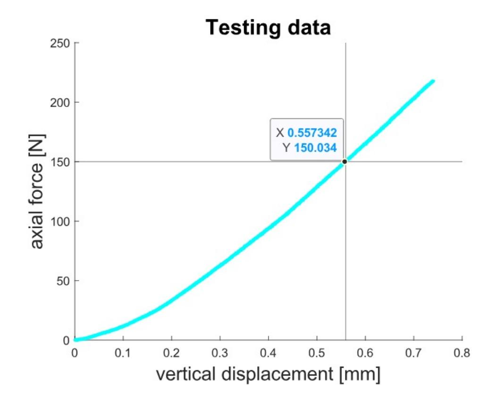
| Model | Weight | Displacement | Printing time |
|---|---|---|---|
| Original | 100% (14.18 g) | 0.173 mm | 17 min |
| Ω-shape (chosen) | 36% (5.17 g) | 0.291 mm | 55 min |
Static and Fatigue Analysis of a Helicopter Rotor Mast
Download report (PDF)A complete analytical and numerical structural assessment of a helicopter main rotor shaft, combining Von Mises and Guest-Tresca failure criteria with finite element analysis (Abaqus, hexahedral mesh) to locate critical notch sections, and validating the results against experimental strain gauge data.
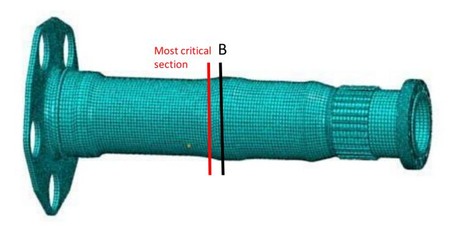
The fatigue assessment used a cyclic axial and torque load profile representative of in-service operation, feeding both the analytical model and the FEM simulation.
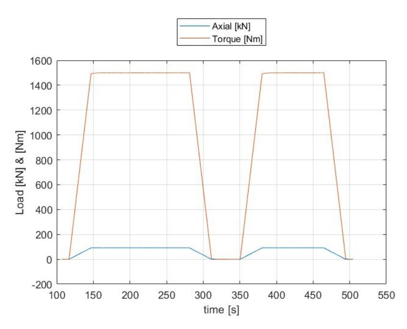
Experimental validation was performed using a strain gauge rosette mounted on a hydraulic axial/torsional test machine, cross-checking the analytical and FEM predictions against measured strains at the critical section.
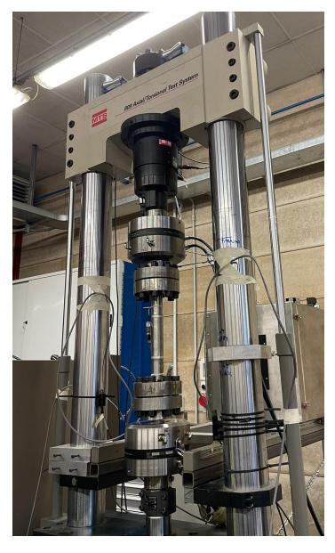
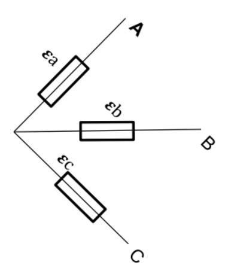